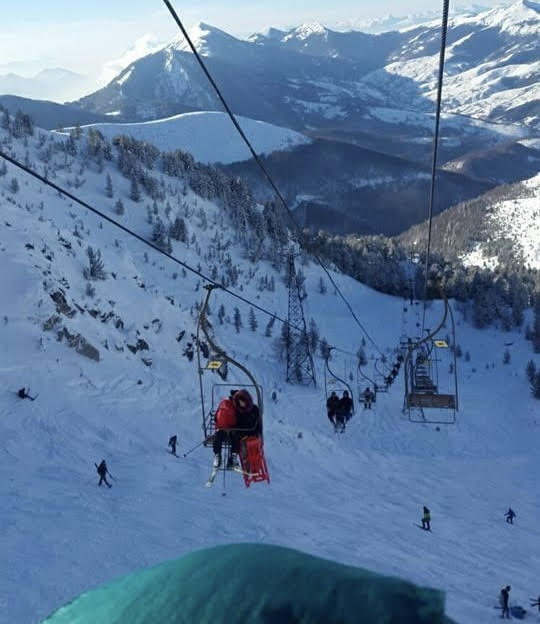
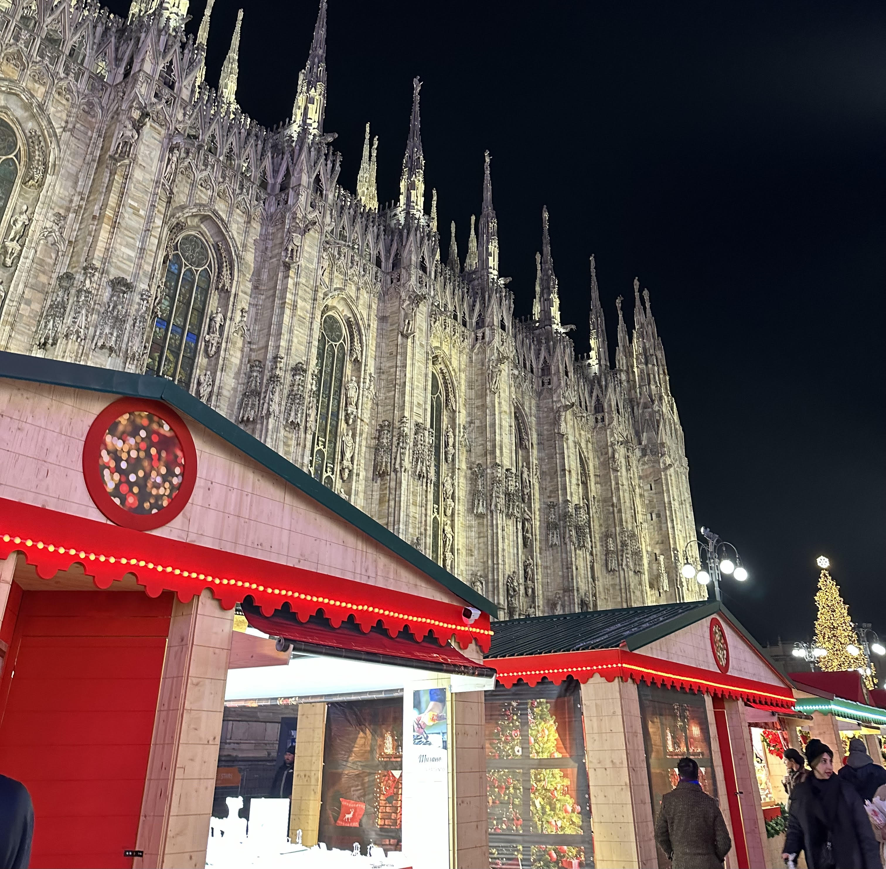
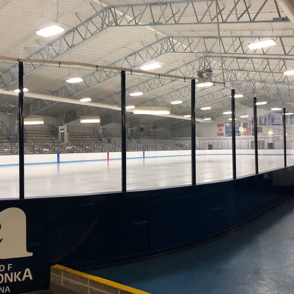

Exciting Winter Activities
| Activity | Description |
|---|---|
| Skiing | Minnesota's slopes provide an affordable and highly regarded adventure for skiers and snowboarders from the Midwest. With options for both fast, technical lines and long, relaxed runs, Minnesota's downhill ski areas offer a unique mix of terrain that you won't find elsewhere in the Midwest. |
| Christmas Market | The European Christmas Market in St. Paul is the most authentic traditional holiday market of its kind in Minnesota, offering a unique shopping experience, family entertainment & intercultural activities. It is an admission-free public event based on the festive open-air Christkindl Markets that spring up in Italy, Germany, Austria, and other European countries during the Advent season. |
| Ice Skating | Minnesota's outdoor ice skating rinks are the perfect surface for winter fun. Found in every corner of the state, ice rinks form on frozen lakes, ponds and even rivers as soon as the ice is thick enough. In addition to skating, most of the rinks on this list have skates available for rent as well as warming houses and/or other perks like concessions and special events. |
Pictures of Winter Activities


